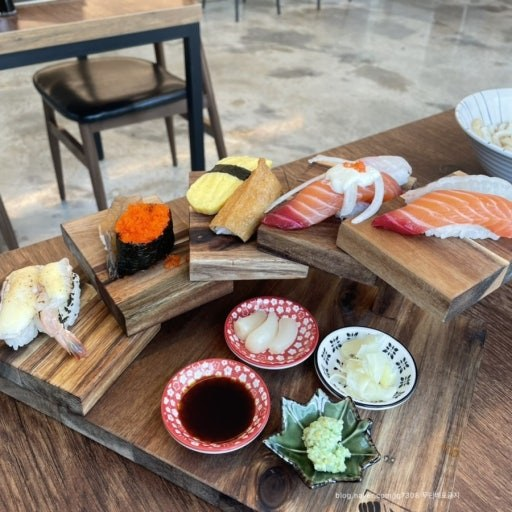
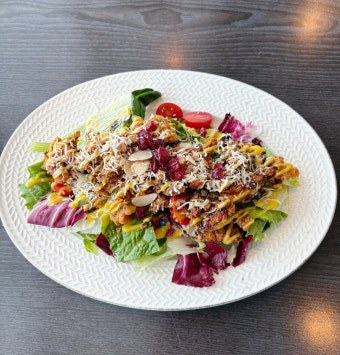
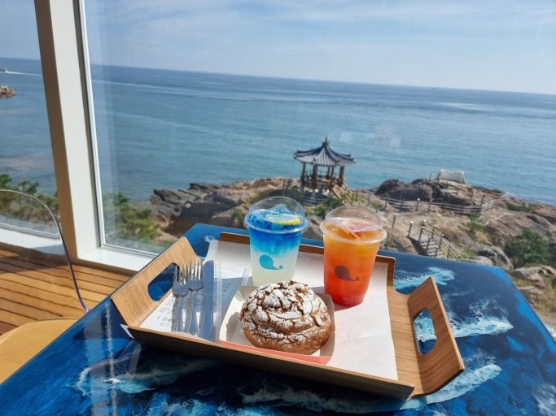

이번달 추천은 한 곳을 깊게 보여주는 코너이고, 맛집 추천은 약속 상황에 맞춰 바로 고를 수 있는 추천 코너입니다.

깔끔한 초밥 메뉴라서 분위기 잡고 싶을 때 부담 없이 고르기 좋아요.

파스타와 양식 메뉴가 무난해서 친구들이랑 같이 가기 좋은 선택지예요.

밥 먹고 바로 헤어지기 아쉬울 때, 바다 보면서 쉬기 좋은 오션뷰 카페예요.
 POHANG FOOD MAP
POHANG FOOD MAP
POHANG FOOD MAP
POHANG FOOD MAP